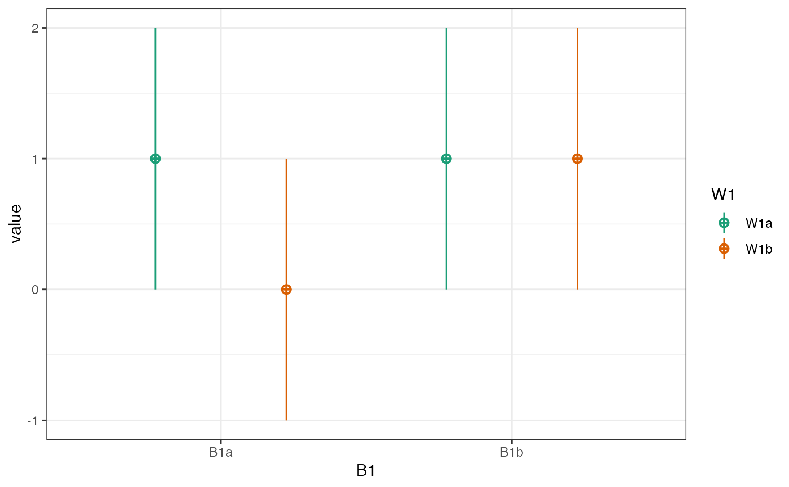

You need model coefficients to simulate multilevel data, and can get them from data simulated from parameters using sim_design() or rmulti().
Usage
get_coefs(data, formula = NULL, fun = c("lm", "glm", "lmer", "glmer"), ...)Examples
# simulate some data
data <- sim_design(within = 2, between = 2,
mu = c(1, 0, 1, 1),
long = TRUE, empirical = TRUE)

# get coefs for the full factorial model
get_coefs(data)
#> boundary (singular) fit: see help('isSingular')
#> (Intercept) W1W1b B1B1b W1W1b:B1B1b
#> 1.000000e+00 -1.000000e+00 -3.552714e-16 1.000000e+00
# a reduced model
get_coefs(data, y ~ B1 + W1)
#> (Intercept) B1B1b W1W1b
#> 0.75 0.50 -0.50
# specify a different model function
data$y <- norm2binom(data$y)
get_coefs(data, fun = "glm", family = binomial)
#> (Intercept) W1W1b B1B1b W1W1b:B1B1b
#> 0.6751434 -1.9033141 -0.1766952 1.9906089